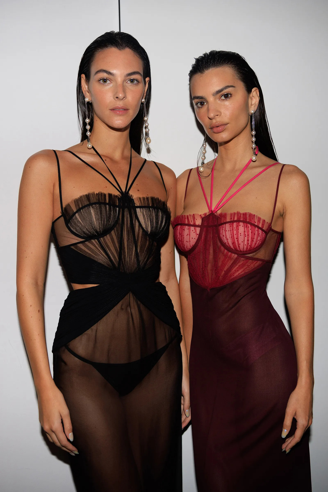
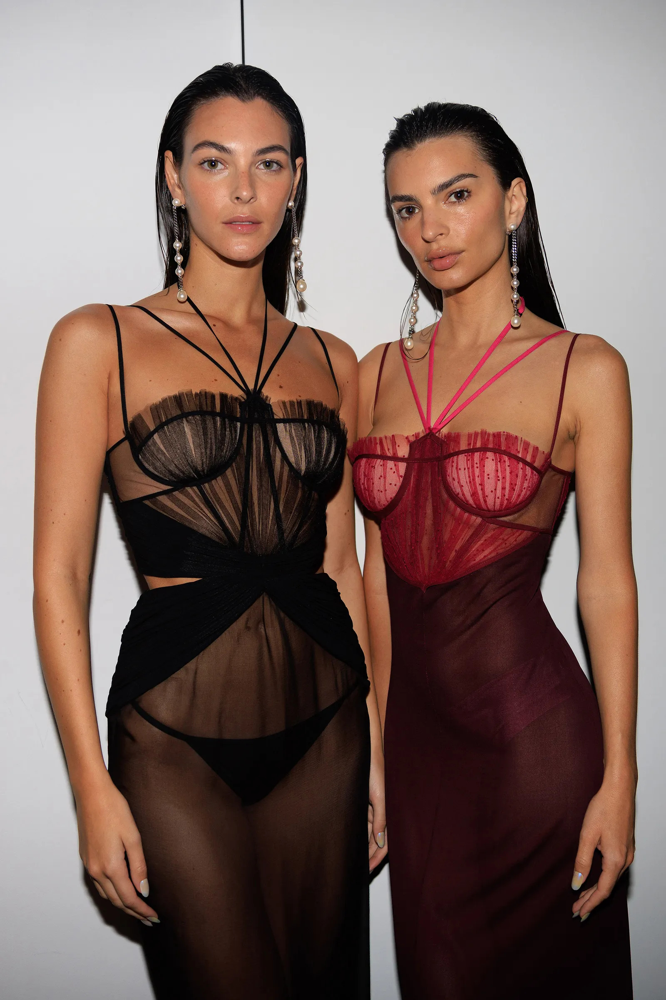
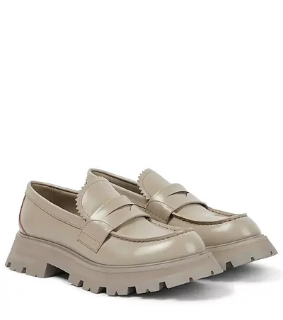
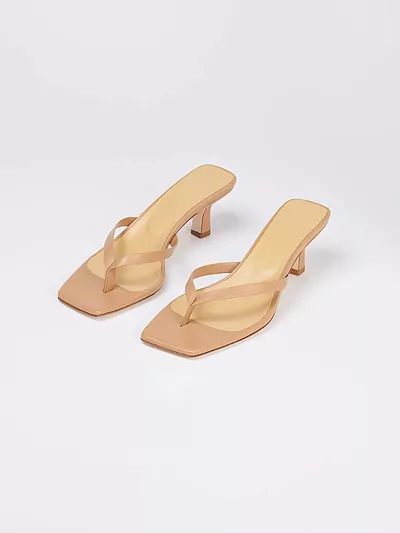

Hablemos de moda
 ¿Qué es la moda? La moda puede ser definida como un mecanismo que regula las elecciones de las personas ya que, por una especie de presión social, indica a la gente qué debe consumir, utilizar o hacer. La moda se convierte en un hábito repetitivo que identifica a un sujeto o a un grupo de individuos.
¿Qué es la moda? La moda puede ser definida como un mecanismo que regula las elecciones de las personas ya que, por una especie de presión social, indica a la gente qué debe consumir, utilizar o hacer. La moda se convierte en un hábito repetitivo que identifica a un sujeto o a un grupo de individuos.
Historia: El uso de la ropa se remonta a hace miles de años; sin embargo, el concepto de moda como tal empezó en el Renacimiento cuando surgió la profesión de los costureros. Algunos estilos permanecen y se han convertido en clásicos; otros, solo pasajeros, han marcado a generaciones. En el siglo XIV cuando se comienza a tener un concepto de moda. A partir de entonces ha habido diferentes diseñadores y prendas que han marcado época y hablamos de historia de la moda. El vestido surge como una necesidad básica para el hombre. Con el tiempo el vestido ha adquirido un carácter estético, por cuanto ha reflejado el gusto y el carácter de su portador, y se ha ido convirtiendo en un adorno más de la persona, sujeto a los cánones de la moda y del devenir artístico de cada civilización.

Ropa de temporada 2023
Las temporadas en la industria de la moda, son una forma de dividir el año para presentar colecciones que se adapten a las necesidades de los consumidores. Se ajustan principalmente al clima, es por eso que las colecciones se presentan con 6 meses de anticipación. La industria de la moda divide el año en dos estaciones: primavera-verano y otoño-invierno. En febrero se presentan las colecciones de otoño-invierno que llegarán a las tiendas a finales de agosto. En septiembre se presentan las colecciones de primavera-verano que llegarán a las tiendas en febrero.

Primavera - Verano
Lo que más se usará en esta estación es lo siguiente: flores, colores pastel y fosforescentes, tejidos ligeros, sombreros, sandalias finas, cuero, transparencias, mini faldas, botas, plataformas, animal print, pantalones a la cadera... Imágenes de referencia:


 
 Otoño - Invierno
Incluso en invierno, dependiendo el país, puede haber muchas variaciones climáticas, no siempre frías. Con eso en mente, es importante que observes y adaptes las tendencias a la realidad de tu consumidor. Ahora que lo sabes, considera lo que estará de moda la próxima temporada y planifica la creación de tu moda Otoño/Invierno. Invierte en colores más atrevidos, pero también en tonos pastel y tierra: azul rey, café, rojo blanco, naranja, verde quemado, negro, morado, así como acabados mate.
| |
|
| |
|
Zapatos
 |
Las botas a todo color Ya hemos visto en el street style de las distintas Semanas de la Moda. Atreverse o no, esa es la cuestión. Juega con otros colores e inspírate en la estética disco. |
 |
Kitten Heels A medio camino entre el tacón de aguja y las colosales plataformas nos topamos con este discreto tacón de no más de cinco centímetros, te da elegancia y comodidad. |
 |
Mary Jane Veremos modelos con plataforma, hebillas gruesas o con adornos. También de colores tan llamativos como el rojo. Consiguen ponerle ese fascinante toque girly al look en un solo gesto. |
 | Mocasines Los veremos sencillos y de estilo clásico, sal de tu zona de confort y atrevéte a llevarlos con calcetines. |
 |
Zapatos de strass El calzado joya (literalmente) será una de las tendencias más potentes del nuevo año. Y trasciende del terreno de fiesta. Llevarlo con prendas más bien sobrias es la clave para destacar sin saturar. |
 | Sandalias Thong De aire minimalista, directamente rescatadas de los 90, las thong sandals estarán de vuelta. |